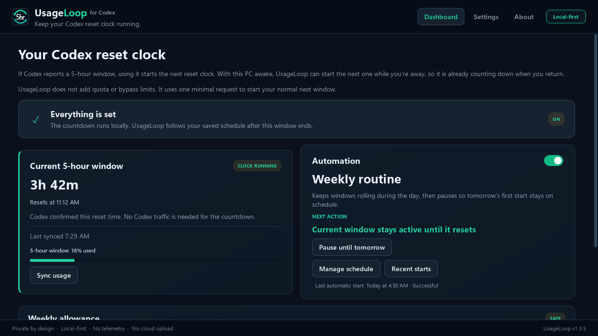

Local-first Codex quota tracker for Windows
Keep your Codex 5-hour reset clock moving while you’re away.
UsageLoop shows whether your Codex reset clock is running and can start the normal next window after the current one resets.
It does not add quota or bypass limits. It starts the normal next window you were going to receive anyway.
- No API key
- No telemetry
- No scraping
- Open source

01
Why the 5-hour window matters
Your Codex 5-hour window starts when you actually use Codex. If the current window ends while you are away, the next reset clock normally waits until you come back and use Codex again.
UsageLoop can start that next clock before you return. The quota does not change. The clock simply starts earlier, so more of the wait can happen while you are away.
02
What UsageLoop does
- Shows the current 5-hour countdown, reset time, and last-known usage.
- Shows weekly usage and blocks automatic starts when the weekly limit is nearly exhausted.
- Starts the normal next window after reset or at a local time you choose.
- Catches up once after sleep, restart, or your next Windows sign-in.
03
What it does not do
No quota tricks.
It cannot add quota, bypass a limit, or make Codex ignore one.
No private-data access.
It does not read credentials, prompts, responses, conversations, or account identifiers.
No hidden service.
It does not need an API key, administrator rights, a cloud account, or a Windows service.
No tracking.
It does not scrape the Codex interface, upload local data, or send telemetry.
04
Download for Windows
UsageLoop needs an x64-compatible Windows PC and the Codex desktop app or CLI already installed and signed in.
The installer is currently unsigned. Windows may show “Unknown publisher.” Download it only from the GitHub release and verify the checksum. If your organization blocks unsigned software, do not bypass that policy.
05
One quiet view of the current window
The dashboard keeps the current clock, weekly safety state, schedule, and last action in one place. The countdown moves locally instead of polling Codex to look live.
06
Local-first by design
Codex owns authentication and network communication. UsageLoop talks to the installed Codex app-server locally and stores only the timing, usage, reset, and safe state needed to do its job.
Automation and Windows startup are off on a new install. The source is public, releases include a checksum, and the Windows test and packaging workflow is visible on GitHub.
Read the privacy and trust details or report a vulnerability privately.
07
How it works, without the protocol tour
- 1Observe
UsageLoop takes several local observations instead of trusting one changing timestamp.
- 2Wait safely
It waits for the current reset, checks the weekly limit, and reserves only one attempt.
- 3Start and verify
When automation is on, it sends one minimal request and reports success only after the new reset clock is visible.
08
Short answers
Does UsageLoop give me more Codex quota?
No. It cannot add quota or bypass either limit. It can only start the normal next 5-hour window after the current one ends.
Does it need my API key or Codex credentials?
No. UsageLoop uses your installed, already signed-in Codex app and never reads its auth files or tokens.
What happens if my PC is asleep or turned off?
UsageLoop cannot act while the PC is unavailable. It catches up after wake, restart, or the next time you sign in.
Why does Windows warn about the installer?
The installer does not yet have a paid code-signing certificate. The release includes a SHA-256 checksum and a public build workflow, but those are not a substitute for a signed publisher identity.
09